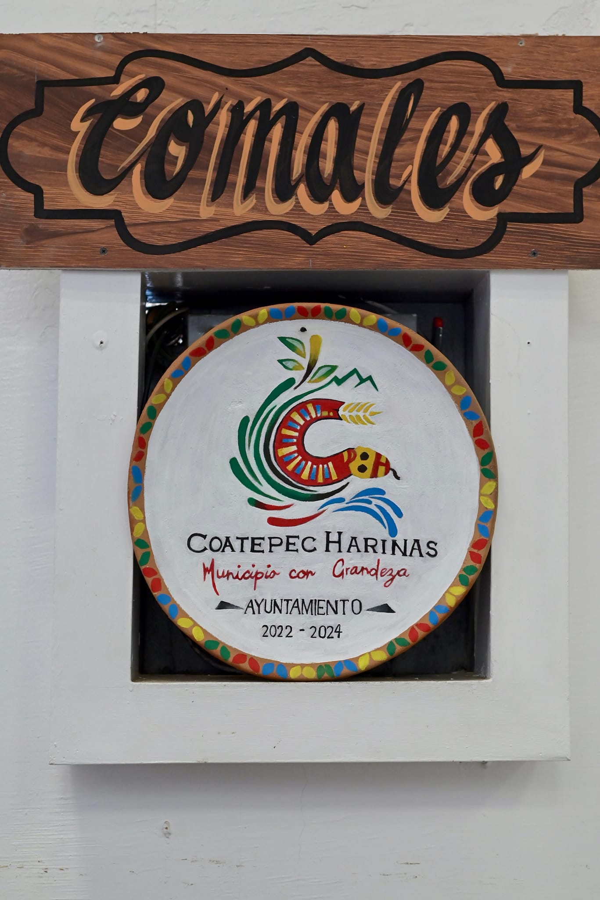

El comal tradicional de los nativos de México y América Central es una pieza de alfarería con forma de plato llano elaborado de barro cocido, que se coloca sobre tres o cuatro piedras (llamadas tenamaxtles), que sirven para darle soporte y para poder encender fuego y brasas debajo.
